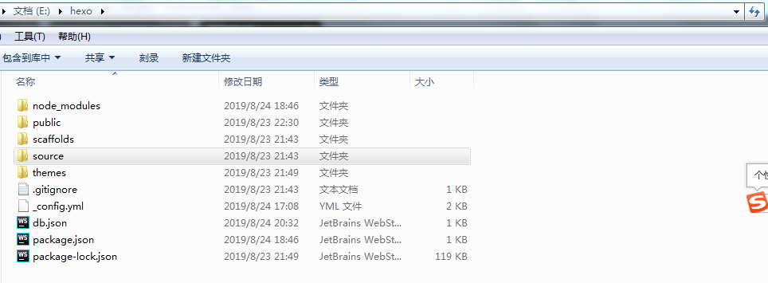
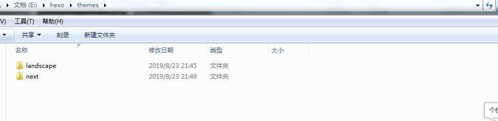

1：环境安装
安装nodejs，并且node版本有要求，同时也安装好nvm，cnpm
node的安装：
该命令下：https://nodejs.org/download/release/v8.16.0/
找到自己的版本：node-v8.16.0-x64.msi（我的电脑是win 64位的）
nvm的安装（node的版本管理工具，如果你电脑上有两个版本的node）
nvm安装的链接：https://github.com/coreybutler/nvm-windows/releases
在该链接下，下载：nvm-setup.zip，解压后安装
测试是node nvm是否安装成功
在命令行里输入：
node -v，成功则显示：v8.16.0
nvm ,成功则显示：Running version 1.1.6….
切换node版本：
nvm use 8.16.0
安装cnpm
在命令行里输入：
npm install cnpm -g
hexo的安装
在命令行里输入：
cnpm install hexo -g
cnpm install hexo –save
安装git
git链接：https://gitforwindows.org/
下载安装即可
2:申请github账户
注意：在github上发表博客都是以 xxx.github.io 这种类型的，其中xxx就是你github账户的用户名
如果要想有一个别致的名字，得在注册的时候就要想好。
github的链接：
https://github.com/
在该链接下申请账户，过程省略…
配置ssh
shh的作用是：你在本地写好博客，上传的github上使用的
步骤：
前提是已经安装好环境
第一步：
打开git工具生成shh,命令：ssh-keygen -t rsa -C “youremail@example.com“
你需要把邮件地址换成你自己的邮件地址，然后一路回车，使用默认值即可。如果一切顺利的话，可以在C:\Users\Administrator目录里找到.ssh目录，里面有id_rsa和id_rsa.pub两个文件，这两个就是SSH Key的秘钥对，id_rsa是私钥，不能泄露出去，id_rsa.pub是公钥，可以放心地告诉任何人。
第二步：
登陆GitHub，打开你的github主页，进入个人设置 -> SSH and GPG keys -> New SSH key，title任意填写，将第一步生成的id_rsa.pub中的内容复制到key中，最后点击Add SSH key。
3：在git bash里建立博客项目
1：推荐在自己的电脑的E盘建立文件夹，命名hexo
2：打开git或者命令行（推荐打开git）
3：进入自己建立的文件夹：E:\hexo，输入命令
hexo的建立过程可参考官网：https://hexo.io/zh-cn/docs/
初始化：
hexo init(完成后会在该目录下新建一下文件夹)

_config.yml–存放配置信息的地方：可自行参考官网
配置自己的主题：
推荐使用next,安装方法：
next的地址：https://github.com/iissnan/hexo-theme-next
使用git安装：
在命令行里进入：E:\hexo
git clone –branch v5.1.2 https://github.com/iissnan/hexo-theme-next themes/next
下载完成后：把主题放在：该文件夹下：E:\hexo\themes

新建自己的文章：
在git里输入：
hexo new “my first article”
注意：
文章生成后是以.md结尾的文档，文章的内容在该文档里填写，需要注意使用相应的语法，推荐使用subline text
生成文件
hexo g
部署到自己的github的仓库里：
在自己的github里新建仓库注意，仓库的名字必须是：“你自己的账户名.github.io”
在_config.yml修改
deploy:
type: git
repository: git@github.com:你自己的账户名/你自己的账户名.github.io
branch: master
使用命名 hexo d发布到github上
4：hexo的自定义设置
1：折叠显示文章：
E:\hexo\themes\next_config.yml
auto_excerpt:
enable: true
length: 150
2：配置显示图片：
1：打开E:\hexo_config.yml
配置：
post_asset_folder: true
2：安装插件：
cnpm install hexo-asset-image –save
3：在自己的文章中以一下形式插入图片：
注意：图片文件是放在：与文章同名的文件下的例如：E:\hexo\source\_posts\how-to-start-a-wedsite3：配置网站访问量
1：打开E:\hexo\themes\next_config.yml
修改：
busuanzi_count:
# count values only if the other configs are false
enable: true
# custom uv span for the whole site
site_uv: true
site_uv_header: 访客数
site_uv_footer: 人
# custom pv span for the whole site
site_pv: true
site_pv_header: 总访问量
site_pv_footer: 次
# custom pv span for one page only
page_pv: true
page_pv_header: 阅读数
page_pv_footer:
如果没生效：
打开：E:\hexo\themes\next\layout_third-party\analytics\busuanzi-counter.swig
修改：
注释掉上面的
#
4：让自己的网站可以播放音乐：
以kolor的围城为例：
https://music.163.com/#/song?id=362759
在该链接下点击：
生成外链播放器
把弹出的代码粘贴到自己的文章中，示例：
5：这是使用hexo建立自己网站的详细过程，更多设置，可参考hexo官网
6：这是使用hexo建立自己网站的详细过程，更多设置，可参考hexo官网